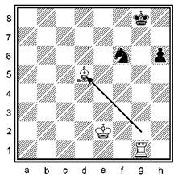
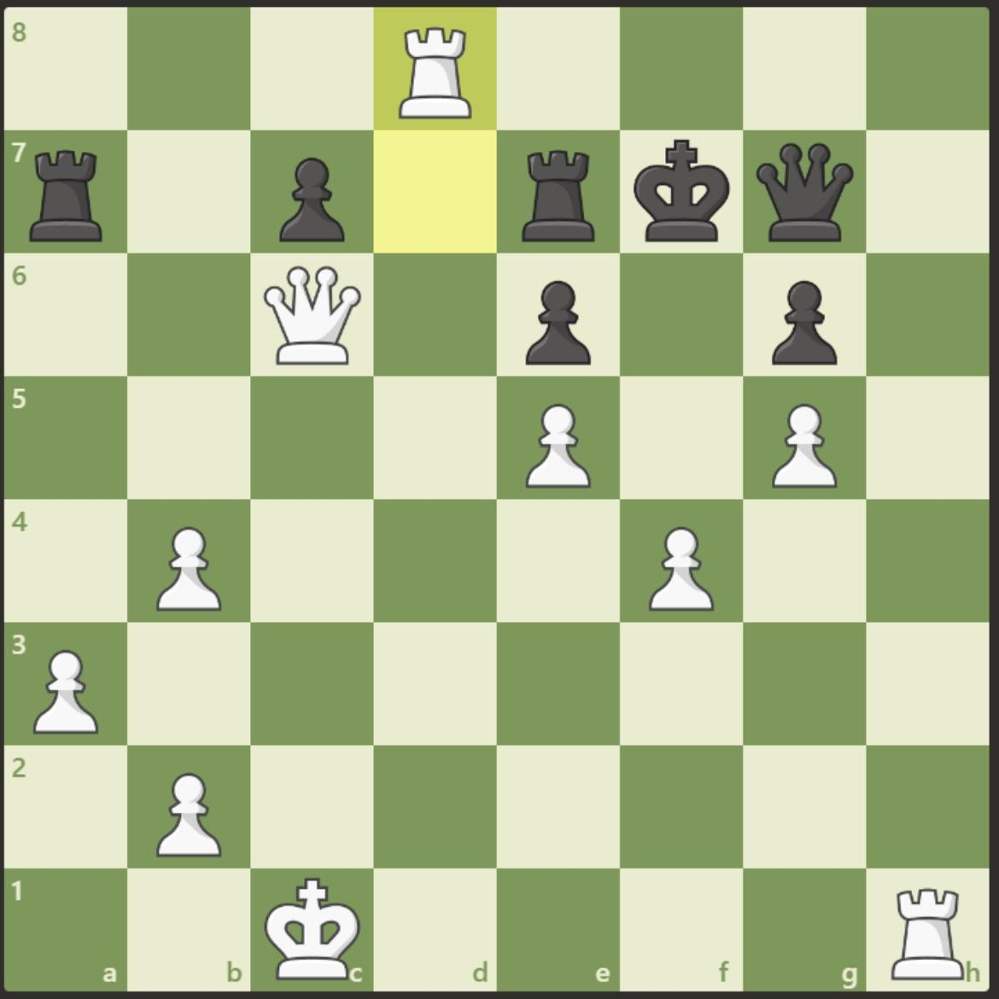

Урок 2: Основные приёмы
Двойной шах
Двойной шах — это шах сразу от двух фигур. Обычно его делают, открывая линию для второй фигуры. Защититься можно только ходом короля.
Тут короля шахует сразу слон и ладья. Работает только ход королем ведь даже если съесть слона конем или защититься конем закрывая удар ладьи шах другой фигуры не избежен.
Открытое нападение
Открытое нападение происходит, когда фигура уходит, открывая атаку другой фигуры.

Немного сложный пример.Тут первый ход совершается белопольным слоном дабы открыть удар ферзю белым ферзем. Слон бьет пешку дабы сделать шах тем самым вынудить разобраться шахом и не успеть защитить ферзя или убежать.
Связка
Связка — это когда фигура не может уйти, потому что за ней стоит более важная фигура или король.

Мельница
Мельница — это серия шахов, при которых одна фигура постоянно открывает линию для другой.

Тут мельница исполняется таким способом:
Rg7+,Kgh7-h8;Rg7:g6(открывая шах слоном),Kgh8-h7;Rg6-g7+,Kgh7-h8;Rh7:f7,Kgh8-g8;Rg7-h7...
Тем самым съедая все фигуру круг за кругом.Мат в 2 хода
Мат в 2 хода — это задача, где белые должны поставить мат ровно за два хода, независимо от защиты чёрных.

Решение:...,Re7+;Kgd8,Rd7#. Тут независмо от ходов черных мат фиксирован(в задачнике будет куча таких задач которые я сам решал)
Цугцванг(для тех кому легко)
Цугцванг — это положение, когда любой ход делает позицию хуже. Чаще всего встречается в окончаниях.В задачах придется соперников вынудить сделать плохой ход, обрезая другие иные возможные ходы.
Абсолютно любой возможный ход черных приведет к патере и ухудшении позиции.